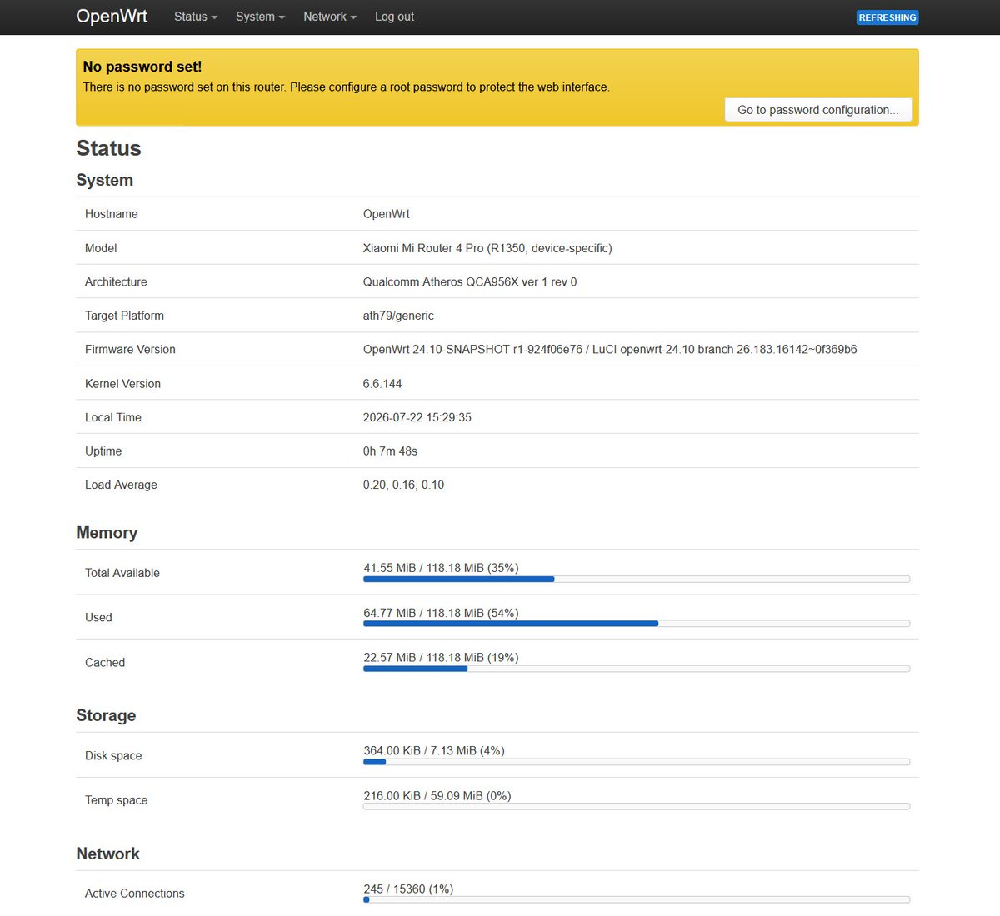
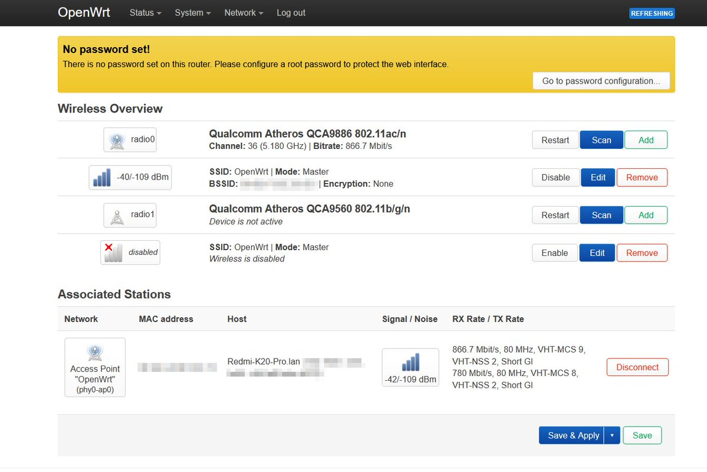
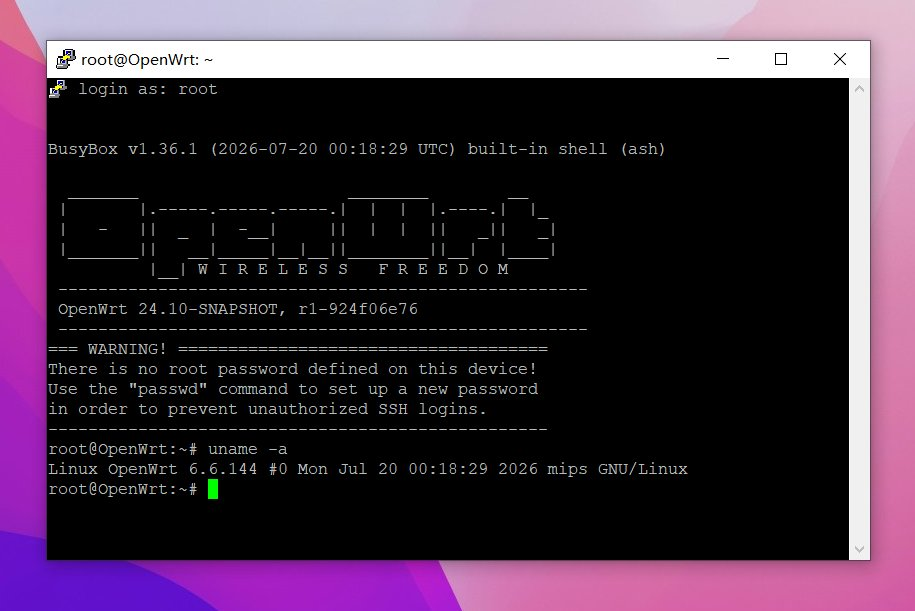
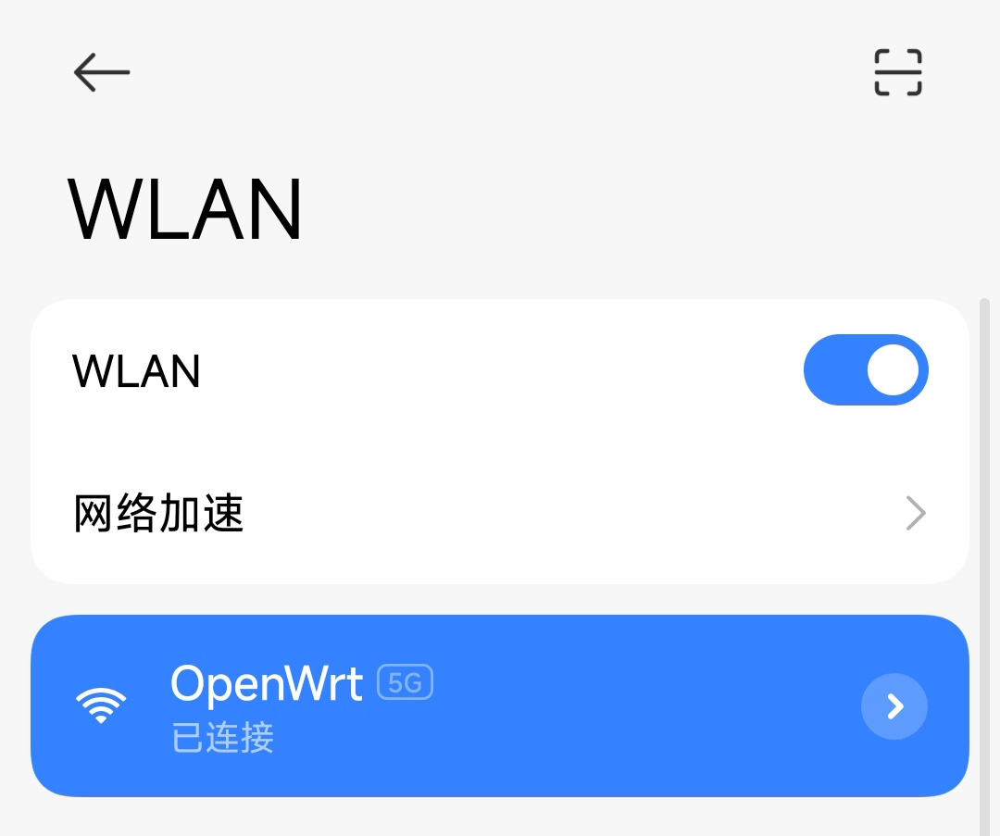

奶昔🥤
@realNyarime
小米路由用的MiWiFi是基于OpenWrt的！
这款小米路由器4Pro是高通单核MIPS处理器QCA9563方案，5Ghz用的是QCA9888需要单独做适配，在小米AIoT AC2350的基础上把A9984改成QCA9888
可惜QCA9563并不支持硬件加速，只能通过软加速到300M 以上。如果是大学百兆网用那确实是够了，但千兆环境建议还是换了比较好




纯白果汁
@shiroijusu
真的非常感谢 @realNyarime 大佬愿意来拯救我！QAQ
大佬重新编译了这台机器的系统，并且针对5GHz WiFi和其他问题做了很长时间的排查。最终，这台原本所有人都在告诉我“不可能”的路由器，终于完美的运行上了OpenWrt(>ω< )
由于我的调试条件有限，还给大佬添了许多不必要的麻烦，感谢大佬的时间与耐心🥰 https://t.co/6D4gvZdEQP